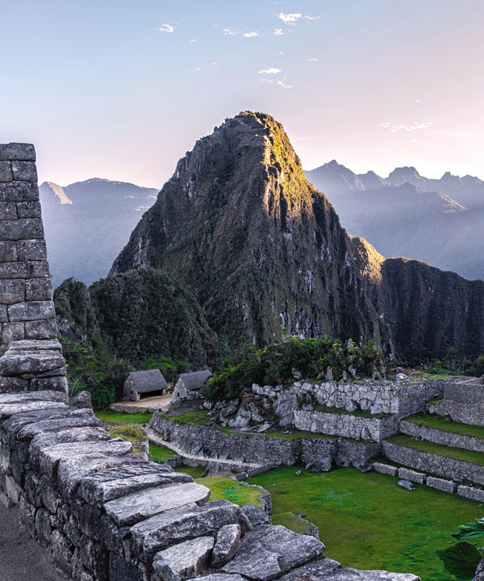

Discover Cusco
Para acceder a Machu Picchu por el principal camino inciao, se debe caminar dyrante tres dias y recorrer un total 42 kilometros. A pesar de la limitacion diaria de viandantes y de la ausencia intercional de carreteras directas hasta las ruinas arqueologicas.

Ciudad de CuscoPrimer paso en la ciudad
OllantaytamboSegundo tramo en bus
Ciudad de CuscoPrimer paso en la ciudad
Machu PicchuA pie o bus 30 minutos
Aguas CalientesEl final tramo que solo va tren
Machu PicchuA pie o bus 30 minutos
Descubre su HistoriaExploremos